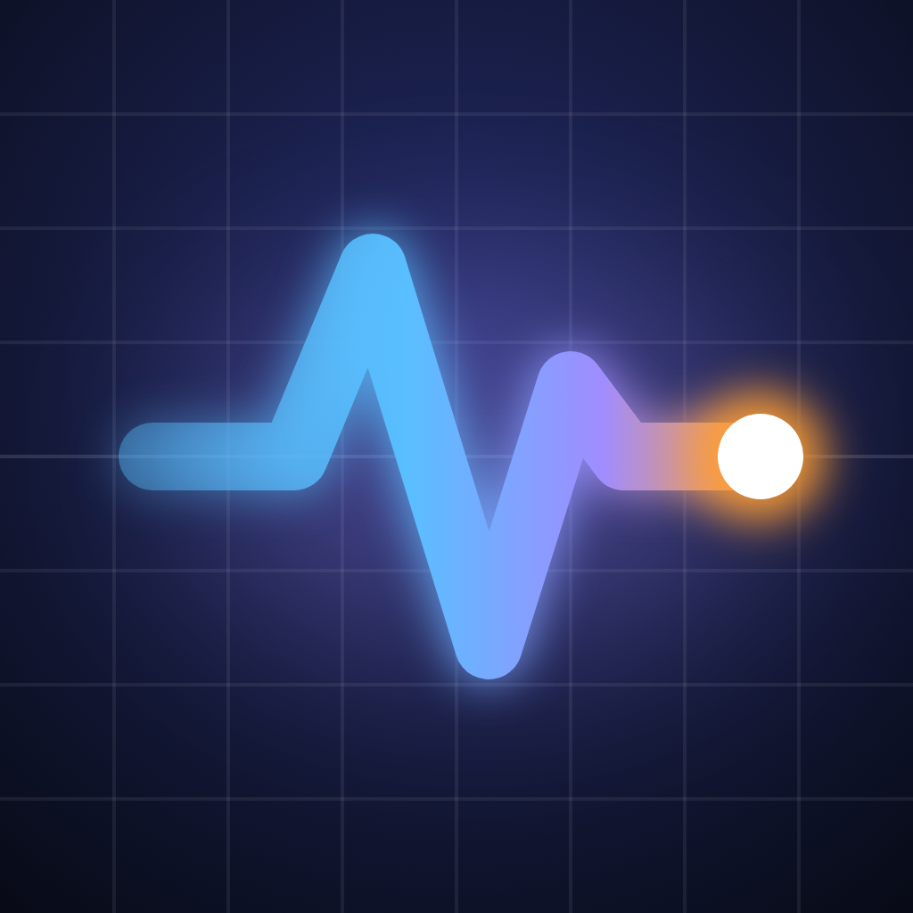

PhonePulse
iPhone 设备状态监测
网速、充电、CPU
一眼看清
把 iPhone 不直接显示的实时数据，集中到一屏。
悬浮网速窗
切到其他 App，网速照样浮在屏幕上
实时网速
上传、下载每秒刷新，附实时曲线
充电功率
边充边看多少瓦（估算），还能比较充电器快慢
CPU · 内存 · 存储 · 温度
还有桌面和锁屏小组件
1
打开 App
· 所有数据一屏看完
9:41
设备状态
网络 · Wi-Fi
下载
12.4 MB/s
上传
860 KB/s
本次统计 Wi-Fi 1.28 GB · 蜂窝 86 MB
CPU
23%
6 核 · 整机
内存
61%
4.9 GB / 8 GB
电池
76%
充电中
充入 ≈ 18.6 W（估算）
存储
186 GB
可用 / 共 256 GB
设备
机型
iPhone 15 Pro
温度状态
正常
本 App 内存
38 MB
2
切到其他 App
· 网速继续悬浮
9:41
↓ 12.4 MB/s
↑ 860 KB/s